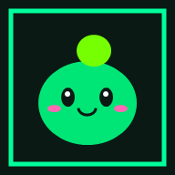

ECO-GOTCHI
Fase 3: Lobby & Dompet
🪙
50
ONLINE
ECO-SLIME
🌱 Level 1 (Bayi)
😊 Mood: Ceria
🪙
Saldo Token
50 ECO
♻️
Total Daur Ulang
0x Scan
🚀
MASUK MODE AR
💰
DOMPET
📜
PANDUAN
⬅
HOME
AR: SLIME-01
Klik 'Kamera AR' untuk mengaktifkan video kamera belakang.
📷
KAMERA
👉 Ketuk monster untuk bermain!
🔄
FLIP
💰
DOMPET ECO-TOKEN
×
Saldo Tersedia
50 ECO
RIWAYAT TRANSAKSI
📜
PANDUAN ECO-GOTCHI
×
1. JELAJAHI MODE WEBAR
Masuk ke Mode AR untuk melihat monster Slime Anda melayang di dunia nyata lewat kamera HP.
2. KUMPULKAN ECO-TOKEN
Pindai QR Code pada tempat sampah daur ulang fisik (Fase 4) untuk mendapatkan imbalan Eco-Token.
3. RAWAT & EVOLUSI MONSTER
Gunakan Eco-Token untuk membeli makanan dan menaikkan level monster Anda hingga berevolusi!